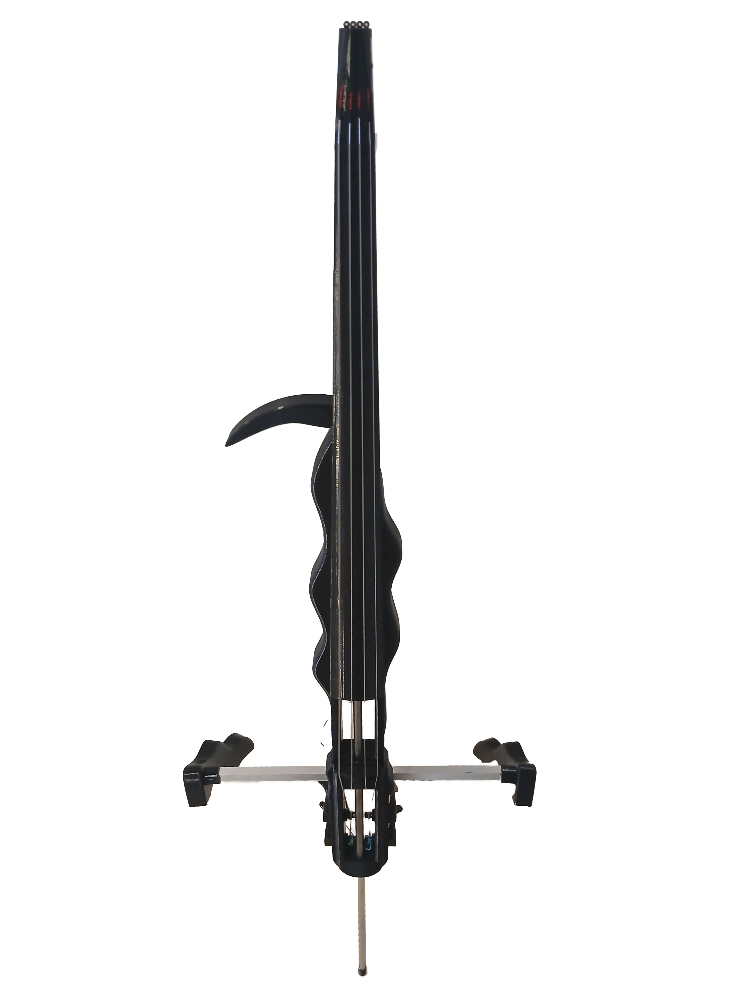

3D-Printed Electric Wavy Cello
$655.00 USD
Buy on EtsyMade to order. Check Etsy for current pricing and availability.



As unique as your sound
Designed and built by Vertex Luthier Noah Connell, this made-to-order electric cello stands out with its sleek wavy body style. Elegant and distinctive, it is crafted for musicians who want an instrument as unique as their sound.
Created from scratch, the body is 3D printed in durable PETG and reinforced with an internal steel rod. It features bass guitar tuners and an adjustable endpin that collapses nearly all the way into the body for easy transport.
Ready to play anywhere
An onboard preamp lets you plug straight into your bass amp or headphone amp. Simply connect to your amp of choice and start performing.
Case and bow are not included. It is compatible with any standard cello bow.
Make it your own
Message us on Etsy with questions or to design a completely custom electric cello. Whether playful, fun, or intense (dragons, puppies, or another theme), we can match your style.